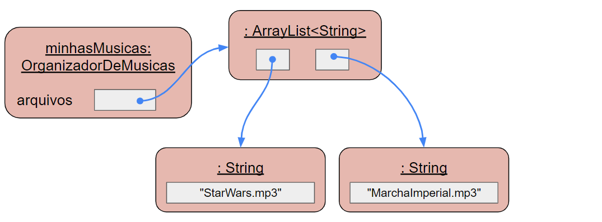
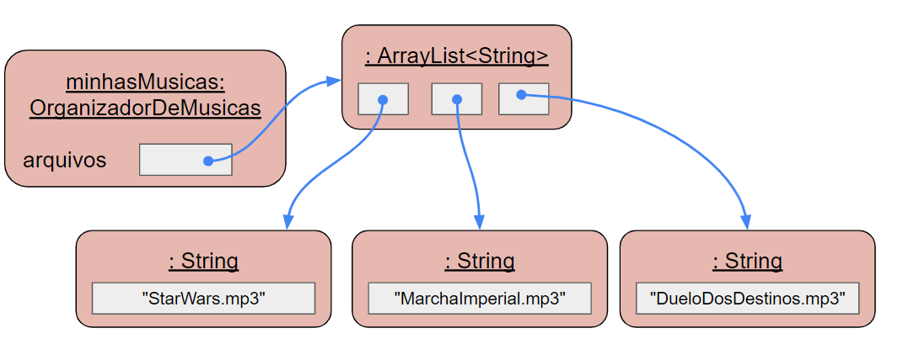

IPOO - Cap. 4 Agrupando Objetos
Aula 4.1 - Teórica
DAC - ICET - Universidade Federal de Lavras
05/10/2023
Algumas perguntas para refletir antes de começar a aula:
- Quantas anotações vocês fez no caderno ao estudar os três primeiros capítulos da disciplina?
- Você estudou todo o conteúdo de todas as aulas teóricas ANP anteriores?
- Você leu alguma parte do livro da disciplina?

Lembre-se que você precisa ser a pessoa mais interessada no seu próprio sucesso!
Entrega no Campus Virtual
Nesta aula não há quizes a responder.
Você deverá entregar a versão final de um projeto que contenha todos os 7 exercícios marcados para a entrega. Eles estão identificados como: Exercício (entrega).
Principais Conceitos do Capítulo
- Coleções
- Laços (loops)
- Iteradores
- Vetores (arrays)
Construções Java do capítulo
ArrayList,Iterator, for-each,while,null, objetos anônimos, vetor,++.
O principal objetivo deste capítulo é mostrar algumas formas que temos de agrupar objetos em coleções.
- Nesta aula vamos aprender sobre a classe
ArrayList, que é um exempo de coleção de tamanho flexível. - Na aula seguinte, veremos como usar vetores em Java.
Ao usar coleções, precisamos percorrer (ou iterar) sobre seus elementos.
- Para isso, utilizaremos estruturas de repetição: for-each,
whileefor.
Este capítulo tem mais conteúdo que os anteriores.
- E, portanto, demandará maior dedicação e esforço.
- Mas os conceitos aqui são fundamentais para que se torne um bom programador.
- E para que entenda os conceitos dos capítulos seguintes.
Usando os conceitos do Cap. 3 como base
Além de conhecermos os novos conceitos de coleção e iteradores,
- vamos revisitar os conceitos de abstração e interação entre objetos vistos anteriormente.
Vimos que abstração nos permite simplificar um problema:
- identificando componentes como unidades completas, sem nos preocuparmos com seus detalhes.
Veremos esse princípio, na prática, ao utilizarmos uma classe da Biblioteca de Classes do Java.
- Ao implementar um programa, um bom desenvolvedor deve sempre procurar por classes disponíveis na biblioteca de classes da linguagem.
- Com isso, evitamos “reinventar a roda”, evitando retrabalho com coisas que já estão prontas e testadas.
- E, assim, podemos focar no que é a essência do problema que queremos resolver.
Portanto, vale muito a pena, se familizarizar com as classes mais comuns da biblioteca do Java.
- O poder da abstração nos permite usar essas classes sem precisarmos saber praticamente nada sobre como elas são implementadas internamente.
Usar essas classes se refere basicamente a:
- Criar objetos delas e chamar os métodos desses objetos.
- Portanto, teremos uma interação entre os nossos objetos e os objetos das classes da biblioteca.
Como foi citado no início da disciplina, esse material tem uma abordagem iterativa.
- O que significa que os conceitos são revisitados o tempo todo,
- com o objetivo de aprofundarmos nosso entendimento sobre eles.
Neste capítulo veremos também que abstação não se refere apenas a ignorar detalhes.
- Mas também a identificar padrões que aparecem repetidamente no código.
- O que nos permite reutilizar em uma nova situação métodos e classes que já havíamos implementado e usado antes.
A abstração de coleção
O que é uma coleção?
Segundo o dicionário Priberam, um dos significados é:
“Reunião de objetos da mesma natureza.”
Uma coleção pode ser:
- Grande.
- Ex.: todos os alunos da universidade.
- Pequena.
- Ex.: as disciplinas que um aluno está matriculado em um semestre.
- Ou até mesmo vazia.
- Ex.: os prêmios Nobel que eu já ganhei.
Se você tem uma coleção de alguma coisa (moedas, autógrafos, o que seja),
- há algumas operações que você pode fazer com a sua coleção de tempos em tempos, como por ex.:
- Adicionar um novo item à coleção.
- Remover um item da coleção (por ter vendido, ou ser repetido, por ex.).
- Organizar os itens de alguma forma (por tamanho ou valor, por ex.).
- Listar um subconjunto dos itens para algum propósito (moedas do império romano, por ex.).
Repare que essas são operações comuns em coleções.
- Independente dos objetos que elas guardam.
No contexto de POO, uma coleção pode ser representada por uma classe.
- E as operações sobre a coleção por métodos desta classe.
- Uma coleção particular (minha coleção de músicas, por ex.) seria uma instância da classe, ou seja, um objeto da classe.
- Note que os itens da coleção (as moedas, por ex.) seriam objetos de outra classe.
Alguns exemplos de coleção comuns no contexto de programação seriam:
- O conjunto de estudantes da universidade no SIG:
- A cada semestre novos estudantes são adicionados, e alunos formados são removidos.
- Filmes e séries no catálogo da Netflix:
- O catálogo é continuamente atualizado, acrescentando novos filmes e séries e retirando outros.
- Os comentários de uma publicação em uma rede social:
- Novos comentários são postados e comentários também podem ser removidos.
Veja que a quantidade de itens armazenada em uma coleção pode variar com o tempo.
- Uma solução ingênua para tratar isso em um código Java seria criar um atributo para cada objeto da coleção.
- Mas veja que precisaríamos adivinhar quantos objetos a coleção precisaria.
- Ou acabar declarando vários atributos que não seriam usados.
Portanto, é muito mais prático se não precisarmos saber, antecipadamente, quantos objetos a coleção precisará ter.
- Para isso, vamos utilizar a forma mais simples possível de agrupar objetos em Java: a classe
ArrayList. - Vamos usar como exemplo um projeto que nos permite organizar uma playlist de músicas.
Conceito
Um objeto coleção pode guardar um número arbitário de outros objetos.
Um organizador de músicas
Vamos criar uma classe para nos ajudar a organizar arquivos de músicas guardados no computador.
- Nossa classe não vai guardar os detalhes das músicas.
- Em vez disso, vamos usar a classe
ArrayListda biblioteca de classes para nos poupar trabalho.

- A questão é que as classes da biblioteca de classes foram criadas para uso geral.
- E não para necessidades específicas.
- Um ArrayList pode ser usado para guardar dados de estudantes, ou de lembretes de eventos, por exemplo.
- A nossa classe específica é que precisará tratar de operações específicas relacionadas a arquivos de músicas.
Por razões didáticas, ou seja, para ficar mais fácil assimilarmos os conceitos:
- vamos começar com uma versão bem simples da classe,
- que lida apenas com os nomes dos arquivos de música.
- Sem detalhes como título, artista, duração, etc.
Nesse cenário, precisaremos que o ArrayList guarde objetos String que representem os nomes dos arquivos.
- A ideia é começar simples, para focarmos no conceito que vamos aprender agora, criação e uso de coleções.
- Depois vamos incrementar um projeto para que ele pareça com um organizar e tocador de músicas de verdade.
A classe vai assumir que cada arquivo tem uma única música.
- E o nome do arquivo tem o nome do artista e da música (usaremos isso mais adiante).
As operações básicas que queremos na primeira versão da classe são:
- Adicionar músicas na coleção.
- A coleção não deve ter limite de tamanho, exceto a memória do computador.
- Retornar a quantidade de músicas na coleção.
- Listar todas as músicas.
Veremos que a classe ArrayList torna bem fácil tratar essas operações.
Estamos adotando uma abordagem incremental.
- Começamos com uma versão básica que mostra como criar e usar um ArrayList.
- E depois vamos melhorá-la até chegar ao ponto de nosso programar tocar a música de verdade.

- Lembre-se que adotar uma abordagem incremental tem uma probabilidade de sucesso muito maior do que querer implementar tudo de uma vez.
Exercício
Antes de analisarmos o código-fonte, vamos entender o funcionamento do organizador de músicas.
Abra o probjeto organizador-musicas-v1 no BlueJ e crie um objeto OrganizadorDeMusicas. Guarde nomes de alguns arquivos de música nele (são simplesmente strings). Como não vamos tocar as músicas agora, qualquer nome de arquivo serve. Mas há um repositório com arquivos de músicas de verdade que você pode querer baixar e usar.
Confira se o número de arquivos retornado pelo método obterQuantidadeDeArquivos bate com a quantidade que você armazenou. Ao usar o método listarArquivo você deve notar que você precisa passar o valor 0 para imprimir o primeiro nome de arquivo, 1 para o segundo, e assim por diante. Você imagina, por que?
Exercício
O que acontece se você criar um objeto OrganizadorDeMusicas e chamar removerArquivo(0) antes de ter adicionado qualquer música?
Ocorre algum erro? Você esperava que ocorresse algum erro?
Exercício
Crie um OrganizadorDeMusicas e adicione dois nomes de arquivos a ele. Chame listarArquivo(0) e listarArquivo(1) para mostrar os dois arquivos. Agora chame removerArquivo(0) e depois listarArquivo(0).
O que aconteceu? Era o que você esperava?
Você imagina alguma explicação para o que deve ter acontecido quando você removeu o primeiro arquivo da coleção?
Usando uma classe da biblioteca
Leia o código da classe OrganizadorDeMusicas.
- Repare que ela usa a classe
ArrayList. - Mas a classe
ArrayListnão aparece no diagrama de classes do BlueJ.
Bibliotecas de classes
Uma das coisas que torna as linguagens OO (Orientadas a Objetos) poderosas, é que elas geralmente trazem junto bibliotecas de classes.
- Essas bibliotecas geralmente têm centenas ou milhares de classes que são muito úteis para os desenvolvedores em diversos projetos.
- Java chama essas bibliotecas de pacotes.
- Nós usamos as classes das bibliotecas exatamente do mesmo jeito que usamos nossas próprias classes.
- Criamos objetos usando
new, e as classes têm atributos, construtores e métodos.
Importando uma classe da biblioteca
A primeira linha da classe OrganizadorDeMusicas mostra como acessar uma classe de biblioteca em Java.
Este comando disponibiliza a classe ArrayList do pacote java.util para ser usada em nossa classe.
- Com isso, nós podemos usar a classe
ArrayListcomo se fosse uma classe do nosso projeto. - Nós a usamos então para declarar o atributo
arquivos.
Repare que a declaração do atributo arquivos traz algo de diferente:
<String>
Isso é necessário porque, como vimos antes, a classe ArrayList foi criada para uso geral.
- Ou seja, ela não restringe que objetos ela guarda.
- Mas, quando criamos um objeto
ArrayList, precisamos dizer qual o tipo dos objetos que serão guardados nele. - Classes que são parametrizadas com um segundo tipo (como a
ArrayList) são chamadas classes genéricas em Java.- Veremos mais sobre isso mais adiante.
Portanto, sempre que usamos uma coleção precisamos especificar dois tipos:
- O tipo da coleção em si (nesse caso,
ArrayList). - E o tipo dos elementos que queremos guardar na coleção (nesse caso,
String). - Assim, uma declaração
ArrayList<String>costuma ser lida como ArrayList de strings.
Notação diamante
Da mesma forma que vimos antes que o construtor da classe VisorDeRelogio criava objetos da classe VisorDeNumero,
- a classe
OrganizadorDeMusicascria um objeto do tipoArrayListe o guarda no atributoarquivos.
Fazemos isso com o comando:
- Nós chamamos essa sintaxe de notação diamante (por causa do sinais
<>consecutivos). - Repare que poderíamos escrever
new ArrayList<String>()- Mas podemos omitir o tipo dos objetos, porque o compilador usa a declaração da variável
arquivospara saber qual tipo deve ser usado.
- Mas podemos omitir o tipo dos objetos, porque o compilador usa a declaração da variável
- Portanto, usar
<>é só um atalho para escrever código mais rápido.
Principais métodos da classe ArrayList
A classe ArrayList possui muitos métodos, mas, por enquanto, usaremos apenas quatro:
add: adiciona um elemento ao final da lista.size: retorna a quantidade de elementos na coleção.geteremove: veremos mais adiante, mas já dá para ter uma ideia vendo como são utilizados no código.
Estruturas de objetos com coleções
Para entendermos como uma coleção como a ArrayList funciona, é interessante analisarmos um diagrama de objetos.
- Compare a figura abaixo que mostra um
OrganizadorDeMusicascom duas strings de nomes de arquivos, com a próxima que mostra com três.

Para entendermos como uma coleção como a ArrayList funciona, é interessante analisarmos um diagrama de objetos.
- Compare a figura abaixo que mostra um
OrganizadorDeMusicascom duas strings de nomes de arquivos, com a próxima que mostra com três.

Há três características importantes sobre o ArrayList que precisamos saber:
- Podemos aumentar sua capacidade conforme a necessidade.
- Ele mantém uma contagem privada da quantidade de itens armazenados (e o método
sizeretorna essa informação). - Ele mantém a ordem dos elementos inseridos (e podemos obter os objetos na mesma ordem).
Veja que, ao utilizar um ArrayList, a classe OrganizadorDeMusica fica muito simples.
- Todo trabalho “pesado” é tratado na
ArrayList.- Essa é a grande vantagem de usar uma classe da biblioteca de classes.
- Poupamos trabalho aproveitando algo que alguém já teve o trabalho de fazer e testar.
Veja que nós usamos a classe ArrayList sem nos preocuparmos exatamente como a classe funciona.
- Basta sabermos o que ela faz e como utilizar seus métodos.
- Veja que estamos mais uma vez usando o conceito de abstração.
- Sem precisar conhecer os detalhes da classe, podemos usá-las em diversas situações diferentes.
Outra coisa importante é que o fato do ArrayList guardar o número de objetos que ele armazena, traz consequências importantes.
- A classe
OrganizadorDeMusicasnão precisa guardar essa informação.- Mesmo tendo um método
obterQuantidadeDeArquivos.
- Mesmo tendo um método
- Repare que o organizador de músicas delega a responsabilidade de manter essa informação para o objeto
ArrayList.- Isso significa que o organizador não duplica essa informação no programa.
Duplicação de informações é algo que devemos nos esforçar para evitar.
- Além de dar mais trabalho, por estarmos fazendo algo duas vezes,
- corremos o risco de, por algum erro, as duas informações (que deveriam ser iguais) estarem diferentes.
Falaremos bastante de duplicação nos próximos capítulos.
Classes genéricas
Vamos aprofundar um pouco a notação utilizada para declarar o tipo do atributo arquivos:
ArrayList<String>
Como já comentamos, classes que dependem de um segundo tipo são chamadas de classes genéricas.
- Uma classe genérica não define um único tipo, mas, na verdade, potencialmente, vários tipos.
- Podemos ter: ArrayList de Strings, ArrayList de Pessoas, ArrayList de Retângulos, enfim, de quaisquer objetos que precisarmos.
- Cada um deles é um tipo diferente.
Por enquanto, vamos usar apenas a classe ArrayList,
- mas existem diversas outras coleções também implementadas como classes genéricas.
Veja as declarações abaixo, por exemplo:
O atributo equipe pode armazenar obetos Pessoa.
- Já o atributo
maquinasguarda objetosMaquinaIngressos. - Portanto,
ArrayList<Pessoa>eArrayList<MaquinaIngressos>são tipos diferentes.
Exercício
Escreva a declaração de um atributo privado chamado biblioteca que guarda um ArrayList. Os elementos do ArrayList são do tipo Livro.
Exercício
Escreva a declaração de uma variável local chamada ipoo que guarda um ArrayList de Estudante.
Exercício
Escreva a declaração de um atributo privado chamado musicas para guardar uma coleção de objetos Musica.
Exercício
Escreva comandos para criar objetos ArrayList e atribuir às variáveis declaradas nos três exercícios anteriores.
Numeração dentro das coleções
Ao usar o projeto organizador-musicas-v1 você notou que, para listar e remover músicas, foi necessário passar parâmetros começando em zero.
- Isso porque objetos armazenados em um
ArrayListtêm uma numeração implícita que começa em zero. - Geralmente chamamos a posição do objeto na coleção de índice.
Portanto, se um ArrayList tiver 20 objetos, qual é a posição do último elemento?
- 19, certo?
- Já que o primeiro objeto fica na posição 0, o segundo na posição 1, e assim por diante.
Repare que os métodos listarArquivo e removerArquivo verificam o valor do índice antes de passá-lo para os métodos do ArrayList.
- Eles conferem se o índice está no intervalo válido, entre
0esize()-1. - É um bom hábito fazer isso para evitar erros nas chamadas de métodas de classes da biblioteca.
Cuidado
Se você não tomar cuidado, pode acabar tentando acessar uma posição inválida de um ArrayList.
Se fizer isso, o programa exibirá uma mensagem de índice fora da faixa (IndexOutOfBoundsException) e o programa será terminado.
É importante se lembrar que, ao remover um objeto de um ArrayList, os objetos que estavam depois dele mudam de posição.
Suponha, por exemplo, um ArrayList com 5 elementos.
- Se você remover o terceiro elemento (ou seja, o elemento da posição 2),
- O próximo elemento vai passar da posição 3 para a posição 2.
- E o último vai passar da posição 4 para a posição 3.
É importante nos acostumarmos a utilizar os índices de uma coleção.
- Pois várias coleções têm essa mesma característica de começar em zero, e seguir sequencialmente, até
size()-1.
Suponha, por exemplo, que uma variável p guarda a posição de um objeto na coleção.
- Como podemos acessar o próximo objeto?
- Pela posição
p+1.
- Pela posição
- E o objeto anterior?
- Pela posição
p-1.
- Pela posição
- E como podemos acessar os três primeiros objetos?
- Pelas posições:
0,1e2.
- Pelas posições:
- E os quatro últimos?
- Pelas posições:
size()-4,size()-3,size()-2esize()-1.
- Pelas posições:
Exercício (entrega)
Crie um novo método na classe OrganizadorDeMusicas chamado verificarIndice. O método deve receber um parâmetro inteiro e verificar se ele é um índice válido para o estado atual da coleção.
Se o parâmetro não for válido, uma mensagem de erro deve ser exibida no terminal, informando qual é a faixa válida de índices (ex.: de 0 a 3). Teste o método usando um objeto da bancada de objetos, experimentando situações com índice válidos e inválidos.
O que acontece se o método for chamado para uma coleção vazia?
Exercício (entrega)
Crie um método similar ao anterior, chamado indiceEhValido. O método deve receber um parâmetro inteiro e retornar um boolean. O método não deve exibir nada no terminal, apenas retornar true se o índice for válido e false em caso contrário.
Teste o método usando a bancada de objetos para índices válidos e inválidos (incluindo coleção vazia).
Exercício (entrega)
Modifique os métodos listarArquivo e removerArquivo da classe OrganizadorDeMusicas de forma que eles usem o método indiceEhValido para verificar seus parâmetros, em vez da expressão booleana atual.
Os métodos get ou remove do ArrayList só devem ser chamados se o método indiceEhValido retornar true.
Tocando os arquivos de música
Seria interessante se nosso organizador não só guardasse uma lista de arquivos de música,
- Mas se também tocasse realmente as músicas.
Se tivermos uma classe implementada para tocar arquivos de aúdio, nossa classe organizadora não precisar saber nada sobre como fazer isso.
- Poderia apenas lidar com o nome do arquivo e deixar a outra classe cuidar do resto.
- Infelizmente, a biblioteca padrão do Java não te uma classe para tocar arquivos MP3.
- Mas muitos programadores e empesas criam classes úteis o tempo todo.
- E as disponibilizam para outras pessoas usarem.
- É o que chamamos de classes de terceiros (third-party libraries).
- Elas podem ser importadas e usadas da mesma forma que as classes da biblioteca padrão Java.
- Precisamos apenas ter o arquivo da biblioteca em nossa projeto (veremos mais sobre isso no futuro).
Em uma nova versão do projeto, usaremos classes da biblioteca javazoom.net para escrever a nossa própria classe tocadora de música.
Nós usaremos três métodos da nova classe TocadorDeMusica.
tocarAmostra,comecarATocareparar.- Os dois primeiros métodos recebem o nome do arquivo de música por parâmetro.
- O primeiro toca alguns segundos do início do arquivo e retorna quando termina de tocar.
- Já o segundo começa a tocar a música em segundo plano (background) e já retorna para o organizador.
- E, nesse caso, precisamos usar o método
pararse quisermos parar de tocar a música.
Avalie as modificações na classe OrganizadorDeMusica no projeto organizador-musicas-v2.
Exercício
Crie um objeto OrganizadorDeMusica da segunda versão do projeto. Experimente adicionar alguns arquivos de música a ele e tocá-los.
Se quiser, você pode usar as músicas do repositório amostras-musicas. Baixe o repositório, descompacte o arquivo e copie os arquivos de extensão .mp3 para a pasta do projeto organizador-musicas-v2. Ao adicionar os arquivos no organizador de músicas, use exatamente o mesmo nome do arquivo, incluindo a extensão .mp3 (ex.: Mactonite-MorningMysteries.mp3)
Você pode usar seus próprios arquivos MP3 também se preferir. Lembre-se apenas de colocar na pasta do projeto e digitar corretamente o nome do arquivo.
Experimente também com arquivos que não existem. O que acontece quando você tenta utilizá-los?
Resumo do organizador de músicas
Agora nós sabemos como usar o básico de uma coleção em Java.
- Fizemos isso com pouco esforço, porque estamos aproveitando o que está implementado na classe
ArrayList. - Da mesma forma, nosso programa é capaz de tocar músicas, com pouco esforço.
- Aproveitando o que já está implementado em uma classe de biblioteca de terceiros.
Veja que, em ambos os casos, precisamos saber muito pouco sobre o funcionamento interno das classes.
- Precisamos saber apenas informações sobre alguns métodos importantes.
- Basicamente seus nomes, tipos de parâmetro e tipo de retorno.
Ainda falta algumas coisas para nosso organizar ficar mais útil.
- Especialmente, poder listar os nomes de todos os arquivos da coleção.
- É o que veremos a seguir.
Processando uma coleção inteira
A ideia agora é ter um método na classe OrganizadorDeMusicas que exiba no terminal todos os nomes de arquivos guardados na coleção.
- Podemos pensar em um método
listarTodosOsArquivospara fazer isso.- Qual deve ser o tipo de retorno do método?
- Ele precisa ter algum parâmetro?
- Quantas chamadas ao método
System.out.printlnprecisamos para mostrar todos os nomes de arquivo?
Veja que, claramente, precisamos de uma estrutura de repetição para implementar o método.
- Vamos começar utilizando o loop for-each.
Conceito
Um loop (ou laço) pode ser usado para executar repetidamente um bloco de comandos sem precisarmos escrevê-los várias vezes.
O loop for-each
Um loop for-each (para cada) é uma forma de realizar ações repetidamente nos itens de uma coleção.
- Sem precisar escrevê-las mais de uma vez.
A sintaxe do for-each é mostrada no pseudo-código a seguir:
for (TipoDoElemento elemento : coleção) {
corpo do loop
}Esse código fica mais fácil de entender se o lermos assim:
Para cada elemento na coleção faça: {
corpo do loop
} for (TipoDoElemento elemento : coleção) {
corpo do loop
}Repare que a variável elemento está sendo declarada no cabeçalho do loop.
- Por isso, precisamos informar o tipo da variável.
- Nós chamamos essa variável de variável do loop.
- E podemos usar o nome que quisermos para a variável.
Abaixo está uma implementação do método listarTodosOsArquivos:
Repare que o método println é chamado para cada objeto presente no ArrayList arquivos.
- Se houver quatro músicas na coleção, ele será executado quatro vezes.
- Em cada execução, a variável
nomeDoArquivoguarda um dos elementos da lista.- Na primeira vez o elemento da posição 0, depois da posição 1, e assim por diante.
Exercício (entrega)
Implemente o método listarTodosOsArquivos no seu projeto.
Crie um objeto OrganizadorDeMusicas, adicione alguns arquivos a ele e teste o método que você implementou.
Dica: use o depurador do BlueJ para reforçar o entendimento de como o loop for-each funciona.
Exercício
Crie um ArrayList de Strings no bloco de códigos do BlueJ, digitando as duas linhas abaixo.
Repare que a segunda linha não tem ponto-e-vírgula e, por isso, aparecerá um ícone vermelho no bloco de códigos. Use-o para jogar o objeto ArrayList criado na bancada de objetos.
Clique no objeto e verifique os métodos disponíveis. Tente usar alguns dos métodos: add, remove, size e isEmpty. Tente chamar os mesmos métodos também pelo Bloco de Códigos.
Processamento seletivo de uma coleção
Nós vimos que podemos usar um loop for-each para percorrer todos os elementos de uma coleção.
- Mas nós não somos obrigados a fazer a mesma coisa com todos os objetos.
- Podemos, por exemplo, querer listar apenas as músicas de um determinado cantor.
- Ou buscarmos todas as músicas que têm uma certa palavra no título.
O que você acha que precisamos acrescentar no corpo do loop para fazer esse tipo de coisa?
- Basta usarmos um comando condicional (
if) para selecionar os arquivos que queremos.
O código abaixo mostra um exemplo de processamento seletivo.
/**
* Lista os nomes dos arquivos que batem com a string de busca passada
* @param stringDeBusca A string a ser procurada.
*/
public void buscarMusicas(String stringDeBusca)
{
for (String nomeDoArquivo : arquivos) {
// Se a string de busca existe no nome do arquivo
if (nomeDoArquivo.contains(stringDeBusca)) {
System.out.println(nomeDoArquivo);
}
}
}- Usando o método
containsda classe String, podemos filtrar os arquivos.- E exibir apenas aqueles que têm a string de busca passada.
- Se o nome do arquivo não tem a string de busca, nós simplesmente o ignoramos.
- E, por isso, não há um bloco
elseno código.
- E, por isso, não há um bloco
Exercício (entrega)
Adicione o método buscarMusicas à sua última versão da classe OrganizadorDeMusicas.
Confira se o método exibe apenas os nomes de arquivo que possuem a string de busca. Experimente também usar uma string de busca que não exista em nenhum arquivo.
Exercício (entrega)
Altere o método buscarMusicas de forma que seja exibida uma mensagem caso nenhum arquivo tenha a string de busca passada.
Dica: você precisará declarar uma variável local do tipo boolean.
Exercício (entrega)
Crie um novo método buscarETocarMusicas que toque uma amostra das músicas de um determinado artista. Para isso, os nomes dos arquivos precisam conter o nome do artista.
O método é similar ao do exercício anterior mas, ao encontrar um arquivo que possui a string de busca (nome do artista, no caso), em vez de exibir o nome do arquivo, ele deve tocar uma amostra da música. Você precisará utilizar o método tocarAmostra do atributo tocador para fazer isso.
Limitação do uso de strings
Quando começamos a fazer buscas nos nomes dos arquivos, começamos a perceber que tratar tudo como string não é ideal.
- Ex.: podemos querer buscar todas as músicas que tenham a palavra
loveno título.- Mas isso pode retornar músicas de um cantor chamado
Glover.
- Mas isso pode retornar músicas de um cantor chamado
- Veja que, pensando em termos de orientação a objetos, o ideal era que tivéssemos uma classe para representar músicas.
- E essa classe poderia, por exemplo, guardar separadamente o nome do artista e o nome da música.
- E, assim, seria mais fácil buscar músicas por artista ou pelo nome.
Supondo então que fosse criada uma classe Musica, qual deveria ser o tipo do nosso atributo arquivos?
- Em vez de
ArrayList<String>, ele passaria a serArrayList<Musica>.
Faremos essa melhoria na próxima aula!
Entregas dessa Aula
Para ter presença nessa aula teórica ANP, demostrando que você estudou o conteúdo, você deve fazer a atividade abaixo.
Entregas no Campus Virtual
Responda a tarefa no Campus Virtual enviando o seu projeto do organizador de músicas com o arquivo OrganizadorDeMusicas.java contendo as 7 alterações solicitadas nos exercícios ao longo dos slides.